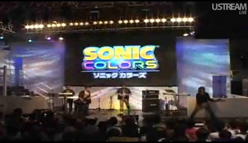
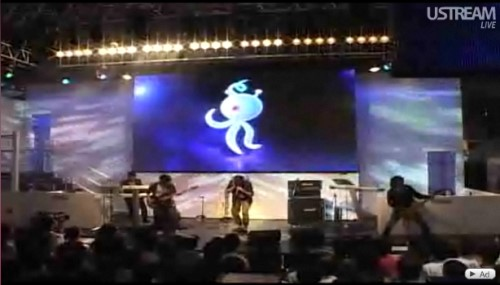
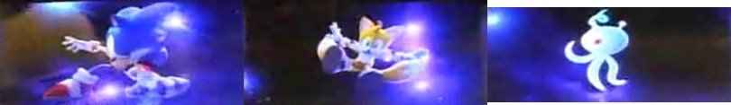
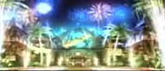
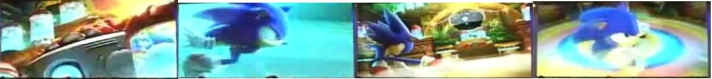
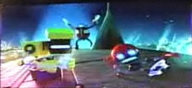
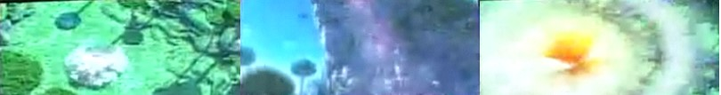

🏠 首頁
📁 未知版塊
TGS謝幕 現場演唱Sonic Colors主題曲！
👤 binyi
🕐 2010-09-19 07:57:55
透過SEGA特設頁面的Ustream即可觀看東京電玩展現場各個活動的實況轉播，大家是否有在台北時間下午3:20開始觀看由H.與TRUE BLUE樂團舉辦的謝幕演唱呢？即使非原唱的Cash Cash樂團，Sonic Colors主題曲和另一首新歌也一同演出！螢幕上播放的遊戲片段，大部份除了是宣傳影片外，也包含幾小段的劇情。除此之外，Sonic Free Riders的主題曲首度亮相。

附件: 1.jpg

附件: 2.jpg
編輯：沒看到的人點二樓連結吧！
👤 RedFox
🕐 2010-09-19 08:34:14
[i=s] 本文章最後由 RedFox 於 2010/9/19 06:50 PM 編輯 [/i]
呵呵，我錯過了 XD
不過其實節目一結束，Ustream馬上就會留下節目記錄
http://www.ustream.tv/recorded/9675277
所以別等Youtube了！快來看吧
[:smile32:]
真正影片大概1:30才開始
所以前面就不用等了，請直接略過
Sonic是開場曲喔
👤 s041117
🕐 2010-09-19 08:57:24
2#
RedFox
sonic colors的主題歌在影片那裡開始呀?
👤 jerrytown
🕐 2010-09-19 09:04:03
13:50那裡
話說Sonic一直做重覆的動做不會累嘛?(逃)
👤 binyi
🕐 2010-09-19 09:20:36
還好可以繼續看XD
Green Hill Zone電子琴版，接著是我漏看、又讓人意外的SFR主題歌，好聽[:baozi5:]
SCo有兩首歌，第一首是未公佈的，有種可以當Ending曲的感覺
第二首就是主題歌了，版本比較長
－三主角

附件: 1.jpg
－Tropical Resort 放煙火

附件: 3.jpg
－雞蛋討打

附件: egg1.jpg
－雞蛋發飆

附件: 2.jpg
－Planet Wisp

附件: 4.jpg
👤 jerrytown
🕐 2010-09-19 13:50:06
一個在喝茶一個在睡覺,也難怪Eggman會生氣
TSSZ
不知道這個訪談有人發過沒有?
👤 gmasomee3
🕐 2010-09-19 13:58:49
[i=s] 本文章最後由 gmasomee3 於 2010/9/19 10:03 PM 編輯 [/i]
雞蛋還真好笑 (秘密計畫又被SONIC 知道了)
習以為常的Orbot不理他 連Cubot都不理他了 XD
不過這次的哥蠻長的 但不錯聽 只是麥克風有時沒對到嘴
不知道另一首神秘哥取哪時候會公佈
希望能早點出來~
雞蛋又有新基地了~
👤 rescueTails
🕐 2010-09-20 02:13:51
SFR主題曲很好聽啊[:baozi6:] ，但是那個老外不知爲何老喘不過氣的感覺……爲啥不讓Johnny來現場呢
👤 leo10000
🕐 2010-09-20 06:53:15
這場live好像很辛苦 因為主唱好像唱不上去 所以氣喘如牛 但是有人拍手回應就值得了
還有SFR的主題曲不錯聽
希望SEGA在辦全球巡迴的live 到台灣來一定一票難求 外加好收入
👤 binyi
🕐 2010-09-20 09:30:24
希望能趕快聽到原唱歌曲 [:baozi6:]
對了，我在五樓放的最後一張圖，對應Wisp分別是直衝天際的\"橘色火箭\"和爬牆而上的\"粉色鐵刺\"
幾乎忘記JERRY有貼
廣告影片
，應該會比較清楚
另外影片中有個星際戰艦場景我想日後就會公佈了
👤 binyi
🕐 2010-09-26 15:00:34
音樂製作人Tomoya Ohtani透漏
在TGS首度演唱Sonic Colors的那首\"Speak With Your Heart＂是結尾曲(Ending Theme)
期待原唱啦[:baozi13:]